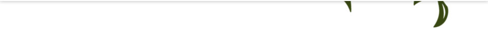
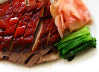
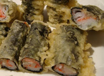
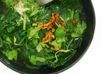
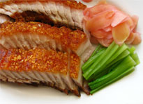

推荐套餐
-

西湖牛肉
它香醇鲜嫩，鲜美可口，常会提前上席作为润喉开胃的美汤。西湖牛肉羹也是深受普通老百姓喜爱的食品。Read more...
-

紫菜包饭
紫菜包饭是一道十分常见的韩式料理，与日本料理中的寿司十分相似。Read more...
-

紫晶汤菜
汤菜，就是指带有较多汤汁的菜肴。汤菜，一般而言，菜是多于汤的，或汤菜各半，或汤多于菜。Read more...
-

肘花
其皮厚、筋多、胶质重，瘦肉多，常带皮烹饪，肥而不腻。Read more...